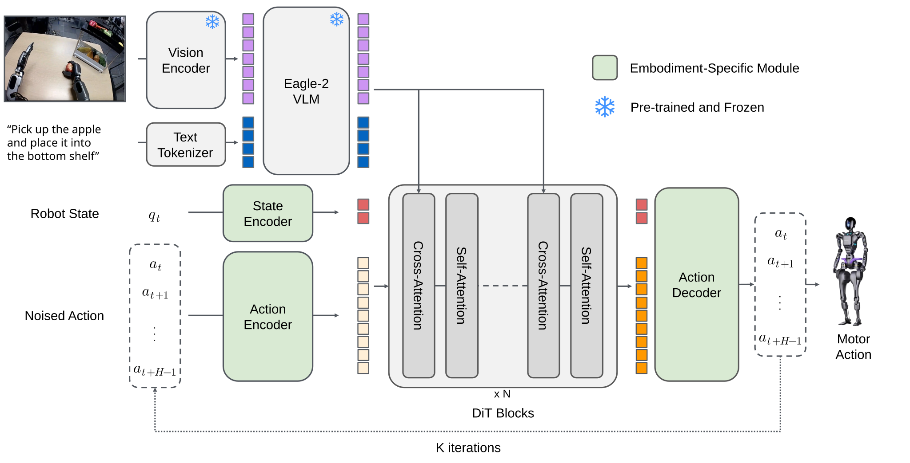

GR00T N1.5
Better grounding, implicit world modeling, and broader humanoid generalization.
GR00T N1.5는 N1의 VLM + DiT flow policy 골격은 유지하면서, 언어 grounding과 미래 상태에 대한 내부 표현을 강화한 개선판이다. 핵심은 더 잘 고정된 VLM과 FLARE의 future-latent objective를 결합해, 어떤 물체를 어디로 옮겨야 하는지를 더 정확히 이해하고 사람 영상에서도 배울 수 있게 하는 데 있다.
What changed?
N1의 action generator는 유지하고, ‘무엇을 볼지’와 ‘앞으로 무엇이 될지’를 보강한다
Eagle 2.5 기반의 stronger grounding VLM
N1.5의 VLM은 Eagle 2.5에서 시작해 physical understanding과 referring expression grounding을 강화했다. GR-1 grounding IoU는 40.4, RefCOCOg-val IoU는 89.6으로 공식 페이지가 보고한다.
VLM은 pre-training부터 fine-tuning까지 고정
N1.5는 VLM 전체를 frozen으로 두고, DiT action policy와 연결부가 그 표현을 활용하도록 만든다. action 학습이 VLM의 언어·시각 능력을 훼손하지 않게 하려는 선택이다.
FLARE: future embedding을 맞추는 implicit world model
미래 영상을 픽셀 단위로 생성하지 않는다. 미래 관측의 compact latent representation을 맞추는 보조 loss를 더해, 행동을 내기 전에 task-relevant한 미래를 내부적으로 예측하게 한다.
Architecture
이미지·언어는 VLM에서, 연속 제어는 DiT에서

Variable camera views + language + proprioception
embodiment마다 image view 수는 달라도 된다. 모든 frame의 image embedding을 하나의 sequence로 이어 붙인 뒤 text embedding과 결합한다. 관절 상태 같은 proprioception은 embodiment ID별 MLP가 처리한다.
Self-attention과 cross-attention의 역할
DiT self-attention은 state와 noisy action token 사이의 관계를, cross-attention은 VLM이 만든 장면·언어 token을 처리한다. 출력은 이산 token이 아니라 연속 motor action vector다.
단순화한 visual-to-LLM connector
N1 대비 vision encoder에서 LLM으로 잇는 adapter MLP를 단순화하고, LLM 입력 직전의 visual·text token embedding 모두에 layer normalization을 추가했다.
FLARE
행동 loss에 ‘미래를 이해했는가’를 더한다
일반 flow policy는 현재 관측에서 action을 맞추는 데 집중한다. FLARE는 여기에 learnable future token을 추가해, policy 내부에서 예측한 미래 표현이 실제 미래 관측의 action-aware embedding과 가까워지도록 학습한다. 따라서 full future frame generator를 별도로 실행하지 않고도 task에 중요한 변화 방향을 배우게 된다.
Action flow matching
N1과 마찬가지로 noise에서 시작해 연속 action chunk를 iterative denoising으로 복원한다. 이 경로가 실제 로봇 motor command를 생성한다.
Future latent alignment
추가 future token이 미래 robot observation의 embedding을 맞춘다. 목표는 배경 픽셀까지 재현하는 것이 아니라, 물체 위치·관계처럼 다음 행동에 필요한 정보를 보존하는 것이다.
사람 영상에는 FLARE만 가능
human ego video에는 로봇 action label이 없다. 따라서 이런 데이터는 action flow loss 없이 future-alignment loss만으로도 학습에 활용할 수 있다.
Training Data
실제·simulation·DreamGen·사람 영상까지 넓힌 학습 혼합
공식 pre-training mixture는 internal GR-1 data, Open X-Embodiment, simulated GR-1/DexMG, DreamGen neural trajectory, AgiBot-Beta를 포함한다. N1에서 시작한 data pyramid를 유지하면서, FLARE를 통해 action annotation이 없는 사람 ego video도 더 직접적으로 활용할 수 있게 했다.
Large-scale pre-training
250K step, 1,000 H100 GPU, global batch size 16,384로 학습했다. flow-matching과 FLARE 모두 pre-training 및 post-training에 쓰며, 공식 설정의 FLARE coefficient는 0.2다.
DreamGen으로 새 행동의 trajectory를 생성
새 verb에 대해 실제 teleoperation data를 직접 모으지 않고 video-based DreamGen trajectory를 만들어 학습에 넣는다. 여기서 ‘zero-shot’은 새 verb의 실제 teleoperation이 없다는 뜻이지, 해당 행동을 DreamGen data로 전혀 학습하지 않았다는 뜻은 아니다.
새 embodiment로 post-training
예를 들어 Unitree G1의 1K teleoperation episode로 post-training한다. foundation model의 폭넓은 prior를 목표 로봇의 action space에 맞추는 단계다.
Results
개선의 중심은 language following과 low-data generalization
실제 GR-1의 language following
두 과일 중 지시한 과일을 접시에 놓는 평가에서 N1의 46.6% 대비 N1.5는 93.3% language following rate를 보고했다. 전체 success rate도 43.3%에서 83.0%으로 상승했다.
RoboCasa 30-demo adaptation
task당 30개 demonstration의 data-limited RoboCasa에서 N1은 17.4, N1.5는 47.5를 기록했다. 작은 downstream dataset일수록 foundation prior의 효과를 보려는 평가다.
사람 ego video를 함께 쓴 novel-object 학습
공식 평가에서 N1.5는 novel object에 15% zero-shot을 보였고, 해당 object가 담긴 human video로 FLARE post-training한 경우 55% success를 보고했다.